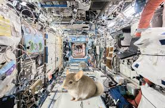

Chinchillas Land On Mars after a 9 Month Journey
The Iris spacecraft landed on the Gale Crater on Mars on Apr 7, 2024.
This was the first spacecraft to land on Mars with chinchillas on it.
These brave chinchillas have gone through years of rigorous training to
prepare for the rough conditions that outer space has to offer. One
condition that these astronauts had to prepare for was how to deal with
the decreased gravity. On Mars, the acceleration due to gravity is only
3.37 m/s², about a third of what it is on Earth.

A picture of Abigail on her trip to Mars.